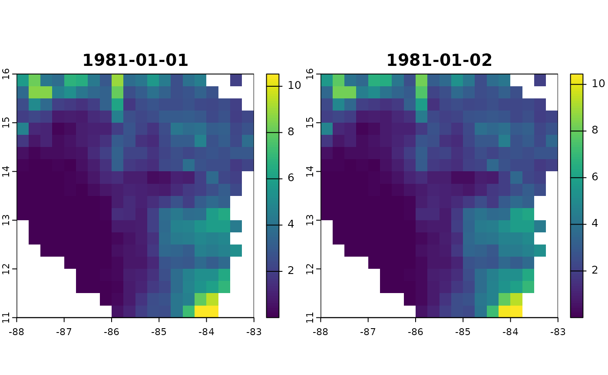
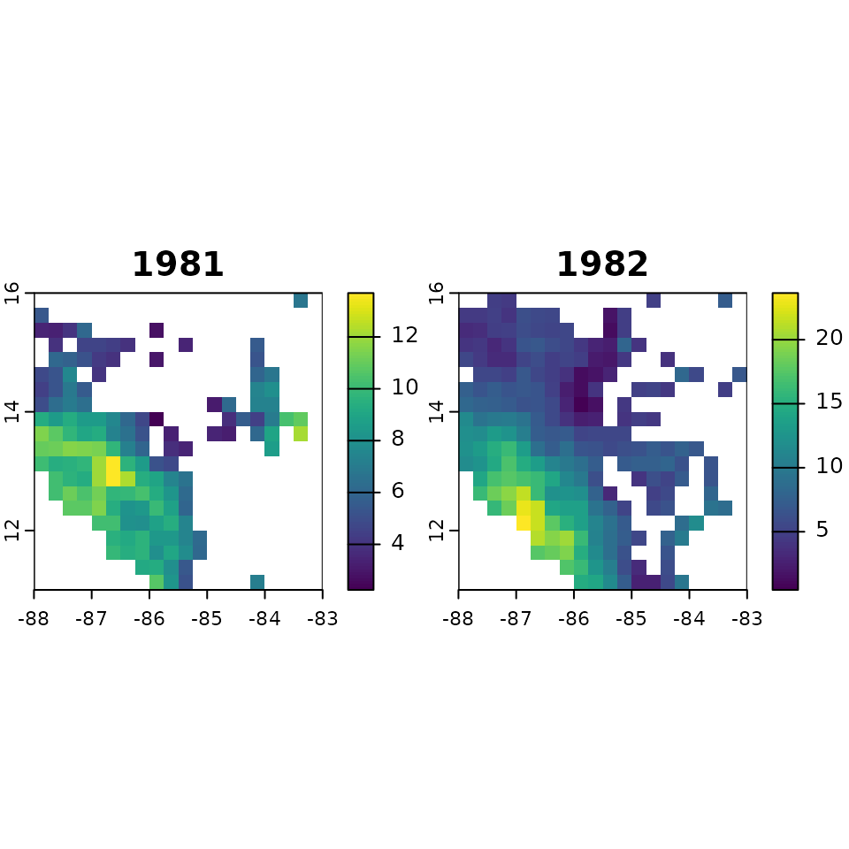

The purpose of the msdrought package is to take the input of a series of rainfall data and to extract some key information (such as dates, rainfall intensity, duration of a rainfall period, and more) to characterize the Mid-Summer Drought climatic phenomenon present in Central America. This vignette will walk you through the process of taking a raster input and extracting a the statistics for each cell of the raster using the terra package.
Packages used in this vignette: terra and
msdrought. These should be installed.
# This loads the data included in the package, but you would attach your own
data <- system.file("extdata", "prcp_cropped.tif", package = "msdrought")
infile <- terra::rast(data)Now we have our raster data loaded in as “infile”. Using the
terra::app command, we can apply a function to each cell of the data.
For the purpose of this vignette, we will be obtaining the
intensity of each cell, but the MSD package is capable
of far more than this. See the ?MSD::msdStats page for more
info.
Begin by finding the range of dates for the raster data, as these
values are needed for the package to understand the statistics. Data
processing begins by filtering the data using a Bartlett noise filter,
then apply the msdStats function to the data.
# Find the key dates related to the MSD
# msdDates = msdDates(x, firstStartDate, firstEndDate, secondStartDate, secondEndDate)
formattedDates <- as.Date(terra::time(infile))
keyDatesTS <- msdrought::msdDates(formattedDates)
# Use the terra::app function to apply the Bartlett noise filter (msdFilter) to the raster
# msdFilter = msdFilter(x, window)
filtered <- terra::app(infile, msdrought::msdFilter, window = 31, quantity = 2)
terra::time(filtered) <- formattedDates
terra::plot(filtered[[1:2]]) Calculate the intensity for the spatrast object.
intensity <- terra::app(filtered, fun=msdrought::msdStats, dates=keyDatesTS, fcn="intensity")
#> Registered S3 method overwritten by 'quantmod':
#> method from
#> as.zoo.data.frame zoo
year1 <- as.numeric(format.Date(formattedDates[1], "%Y"))
year2 <- as.numeric(format.Date(formattedDates[length(formattedDates)], "%Y"))
terra::time(intensity, tstep = "years") <- year1:year2From this, we have achieved our goal of finding all the intensity values for every cell of the raster data set. This data can be viewed via the terra::plot function.
terra::plot(intensity)